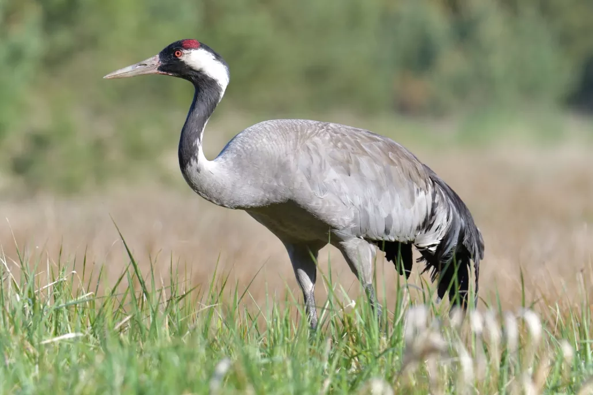

الكركيCommon Crane
Grus grus
مهاجرMigratory
يُعرف الكركي علميًا باسم Grus grus، وينتمي إلى فصيلة الكركيات (Gruidae) ضمن رتبة الغلالياويات (Gruiformes)، وهو طائر طويل الساقين والرقبة ذو جسم رمادي أنيق، ورأس صغير يحمل بقعة حمراء عارية مميزة فوق العينين، وريش أسود وأبيض حول الرأس والرقبة، ويشتهر بأصواته الجهيرة العالية التي تُسمع من مسافات بعيدة أثناء طيرانه في تشكيلات على شكل حرف V. هذا الطائر مهاجر (M) في العراق، إذ يعبره خلال هجرته بين مناطق تكاثره في شمال أوروبا وسيبيريا ومناطق تشتيته الشتوي في أفريقيا وشبه الجزيرة العربية، ويتوقف في الأراضي الزراعية المفتوحة والمسطحات المائية الضحلة والأهوار.
The Common Crane is scientifically known as Grus grus, belonging to the crane family (Gruidae) within the order Gruiformes. It is a long-legged, long-necked bird with an elegant gray body, a small head bearing a distinctive bare red patch above the eyes, and black-and-white plumage around the head and neck, known for its loud, far-carrying calls heard as it flies in V-formations. This bird is migratory (M) in Iraq, passing through during its migration between its breeding grounds in northern Europe and Siberia and its wintering grounds in Africa and the Arabian Peninsula, stopping in open agricultural land, shallow water bodies, and marshes.
يصنَّف الكركي ضمن الأنواع غير المهددة (Least Concern) وفق الاتحاد الدولي لحفظ الطبيعة، بفضل استقرار أعداده العالمية وتزايدها في بعض المناطق. ويسهم الكركي أثناء عبوره العراق في تغذيته على بقايا المحاصيل والحبوب والنباتات الجذرية واللافقاريات الصغيرة، ما يجعله مفيدًا في تنظيف الحقول الزراعية بعد الحصاد، وتُعد أسرابه الكبيرة العابرة أثناء الهجرة من أبرز المشاهد الموسمية المميزة في السهول العراقية.
The Common Crane is classified as Least Concern by the IUCN, thanks to the stability and increase of its global population in some areas. During its passage through Iraq, it feeds on crop remains, grain, root plants, and small invertebrates, making it beneficial in cleaning agricultural fields after harvest, and its large flocks passing during migration are among the most prominent seasonal sights in the Iraqi plains.